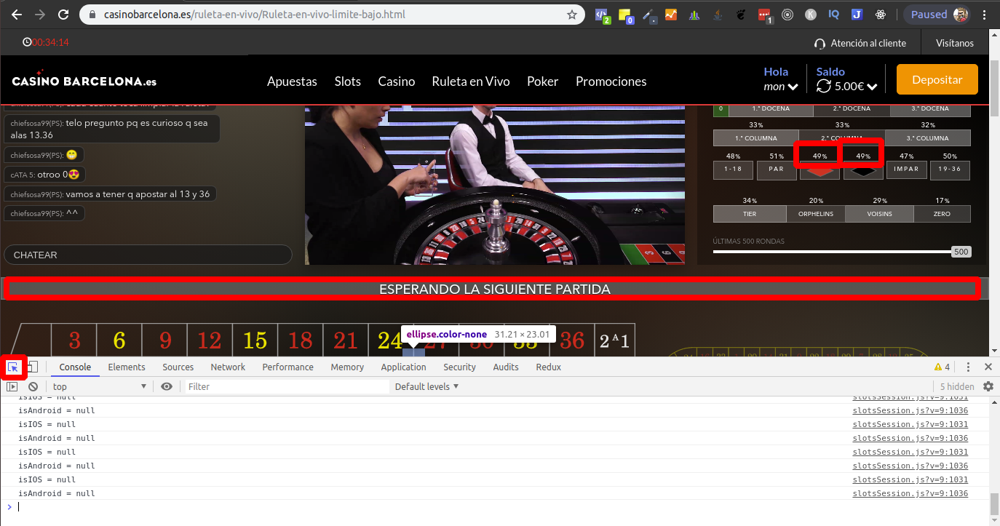

Para que funcione el algoritmo que se encarga de hacer las apuestas, será necesario seleccionar, utilizando el inspector de código (atajo del selector del inspector ctrl + shift + c):
- El letraro que muestra los estados del juego en el inspector de elementos.
- El porcentaje de acierto rojo.
- El porcentaje de acierto negro.

A partir de ahí, ya podremos pegar el código en la consola.